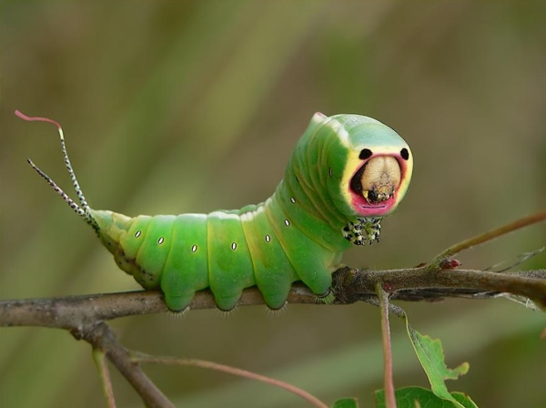

Animinals
blah blah
Turtles

- Turtles spend most of their lives in water. They are adapted for aquatic life, with webbed feet or flippers and a streamlined body. Sea turtles rarely leave the ocean, except to lay eggs in the sand. Freshwater turtles live in ponds and lakes, and they climb out of the water onto logs or rocks to bask in the warm sun.
- Tortoises are land animals. Their feet are round and stumpy, adapted for walking on land. They also dig burrows with their strong forelimbs, and slip underground when the sun gets too hot.
- Terrapins live on land and in water, usually in swamps, ponds, lakes and rivers.
Snakes

- All snakes are carnivorous. They eat small animals including lizards, other snakes, small mammals, birds, eggs, fish, snails or insects.
- Without the hunting prowess of these successful predators, humans would be in very serious trouble. For instance, snakes play an important role in controlling the rodent population, and large rodent populations can devastate crops and spread disease among humans and other animals.
Insects

- The number of insect species is believed to be between six and ten million.Insect bodies have three parts, the thorax, abdomen and head.Insects have two antennae.
- The life cycle of a mosquito features four stages, egg, larva, pupa and adult.Female mosquitoes drink blood in order to obtain nutrients needed to produce eggs.
- Ants leave trails and communicate with each other using pheromones as chemical signals.